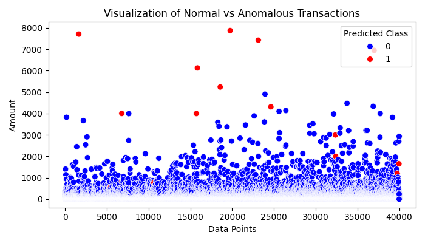

Project Overview
This tool detects fraudulent transactions using an Isolation Forest algorithm, providing visual analytics and export capabilities for financial teams.
Key Features
- Anomaly detection using Isolation Forest algorithm
- Interactive visualizations of transaction patterns
- Export results to CSV/Excel for further analysis
- Customizable detection thresholds
Visual Analytics
Clear visualization of normal vs anomalous transaction patterns helps financial teams quickly identify potential fraud.
Technical Details
Tools Used: Python, Scikit-learn, Pandas, Matplotlib, Jupyter Notebooks
Implementation Highlights
- Preprocessed financial transaction data with Pandas
- Trained Isolation Forest model with optimal contamination parameter
- Generated interactive visualizations with Matplotlib
- Built export functionality for operational use